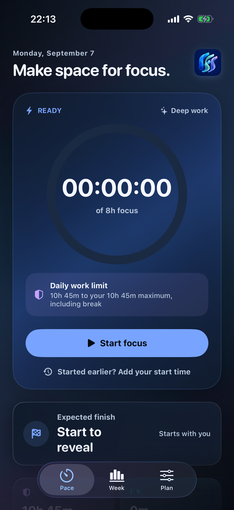

Bitişin gözünün önünde
Odak hedefini, planlı molanı ve günlük çalışma sınırını birlikte gör.
DAHA NET BİR İŞ GÜNÜ
Odak süren, molaların ve planlanan bitişin tek bir sakin görünümde. PaceQ, iş gününün nereye gittiğini anlamanı kolaylaştırır.
7 gün tüm özellikler. Sonrasında tek seferlik ömür boyu erişim; abonelik yok.

Odak hedefini, planlı molanı ve günlük çalışma sınırını birlikte gör.
Odak ve ofis sürelerini ayrı takip et. İzin günlerini planına dahil et.
Sayacı geç başlattığında başlangıç saatini düzelt; günün kaydı doğru kalsın.
Uygulama ve gizlilik soruların için doğrudan iletişime geç.